Search the catalog
Look up books by title, author, chapter, or reader.
Stream and cast LibriVox audiobooks on your phone. Completely free.
Find public-domain recordings from LibriVox, save books for offline listening, and pick up where you left off.
Browse. Listen. Cast.
Search LibriVox, open a book, send audio to nearby Cast devices, save bookmarks, and come back later.
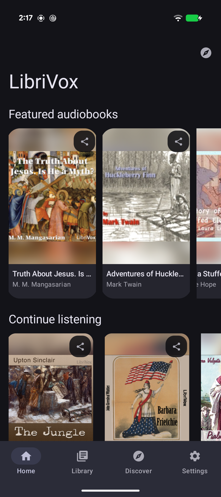
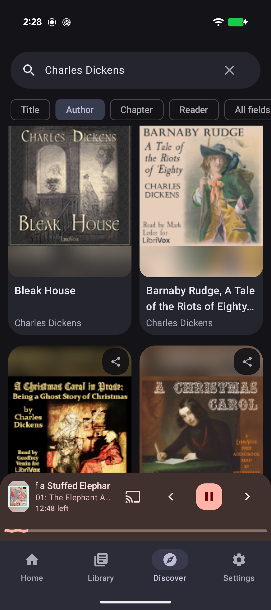
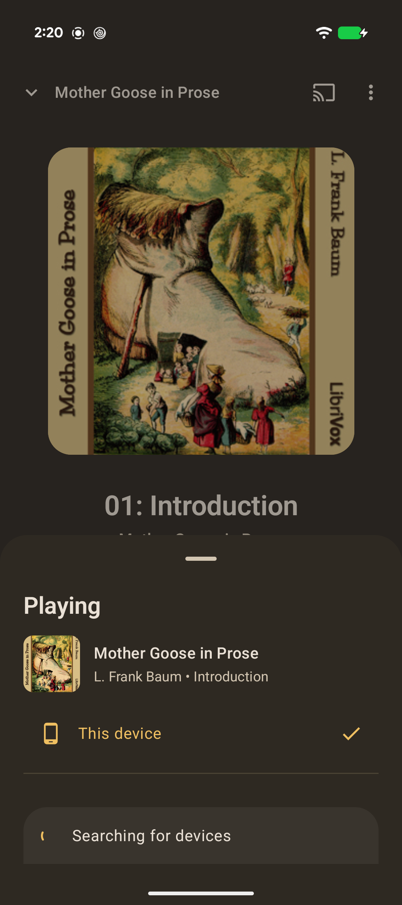
Browse the LibriVox catalog, stream a chapter, download a book, or cast audio to another device.
Look up books by title, author, chapter, or reader.
Listen online, or save books for later when you are offline.
Send a book to supported speakers, TVs, and Cast devices.
Your library keeps progress, bookmarks, likes, and recent listens.
Find books
Open the app and start with public-domain books from LibriVox, including featured titles and recent listens.
Search
Use field filters to narrow the LibriVox catalog and keep listening from the mini-player while you browse.
Book details
Book pages show descriptions, authors, source links, save options, and chapters.
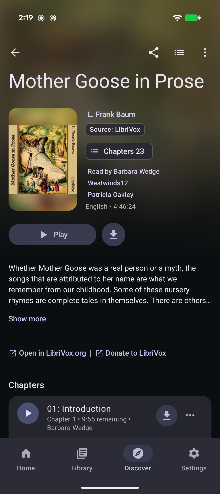
Chapters
Open a book's chapter list, move around long recordings, and return to the section you wanted.

Stream and cast
Listen on your phone, or cast audio to supported speakers, TVs, and receivers on your local network.
Bookmarks
Add bookmarks, keep notes, and return to the parts of a book you want to remember.
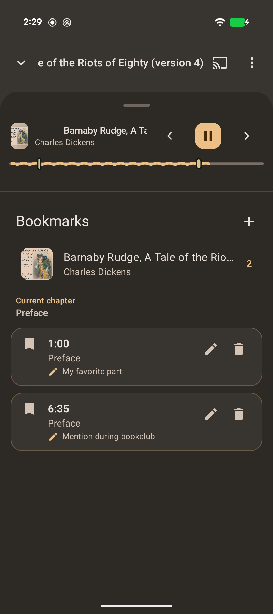
Offline
Save books while you have a connection, then listen later when streaming is inconvenient or unavailable.
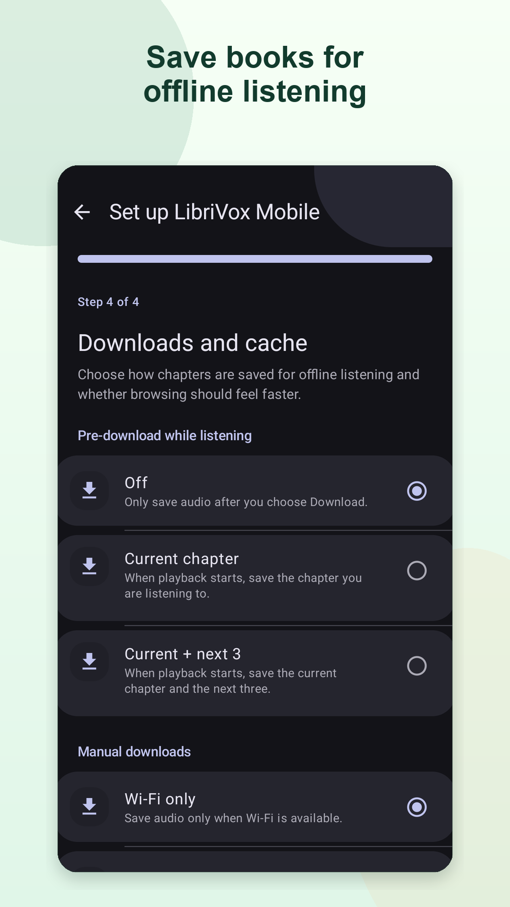
Library
Your library keeps recent books, progress, bookmarks, likes, and downloads so you can get back to the right book quickly.
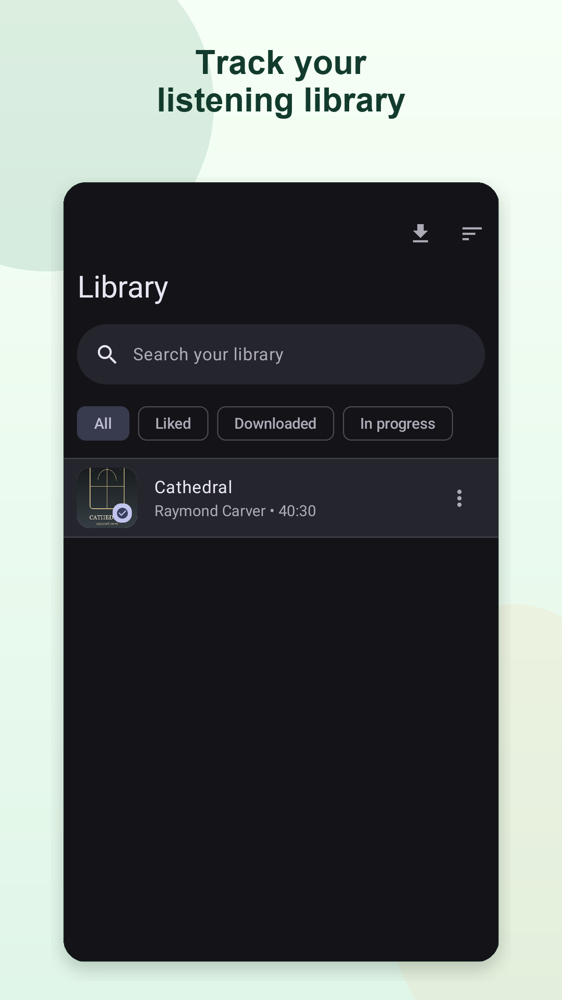
Free means free
No ads. No subscriptions. No paid upgrades. No account required.
Browse the catalog, check book details, save books offline, and use listening tools without leaving the player.
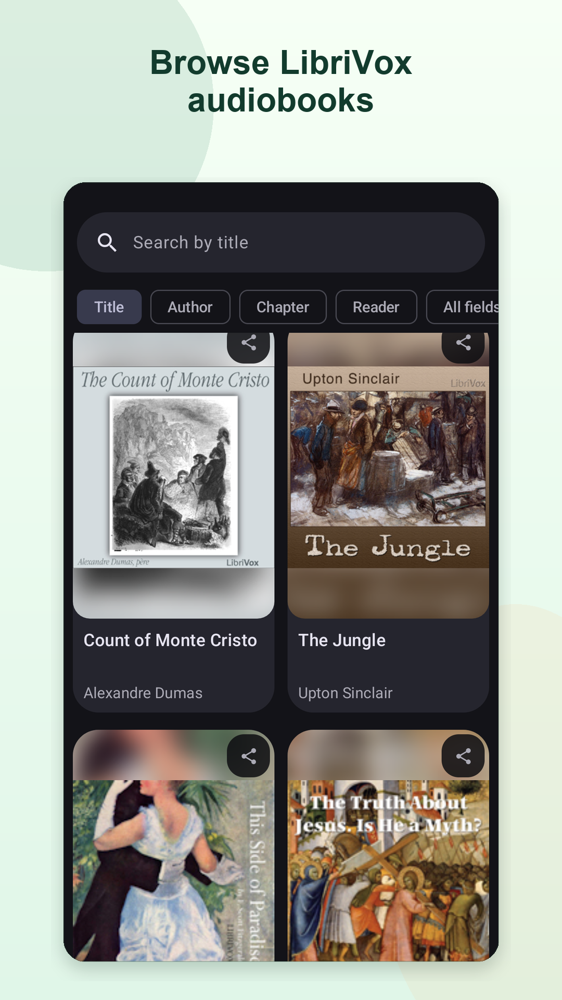
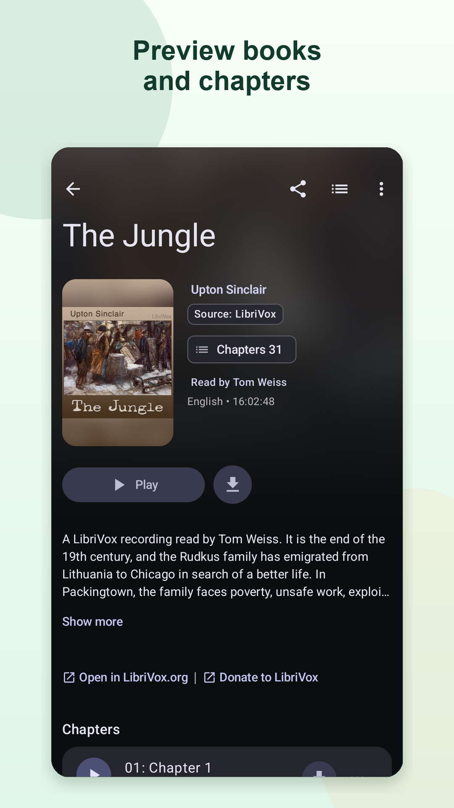
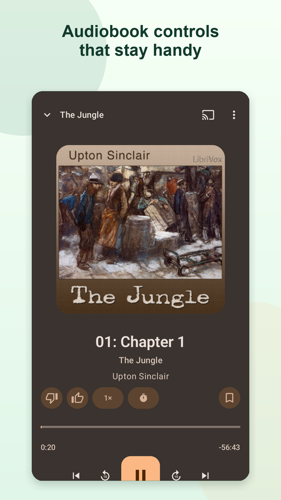
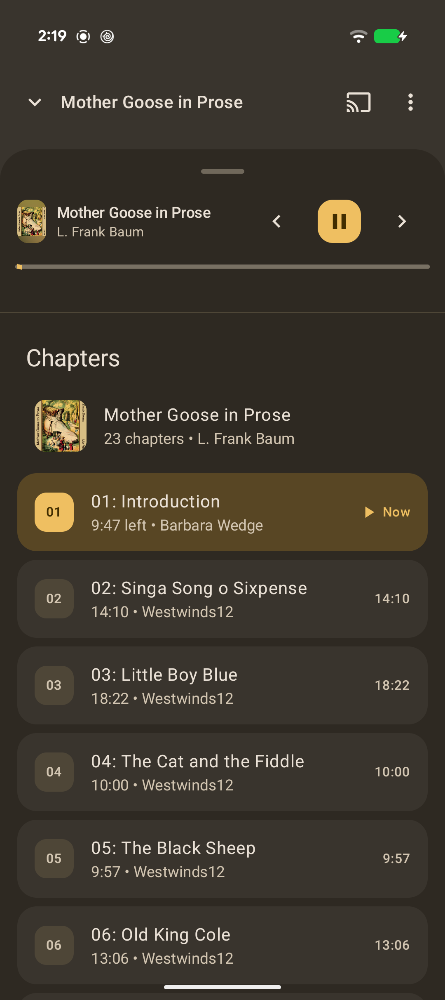

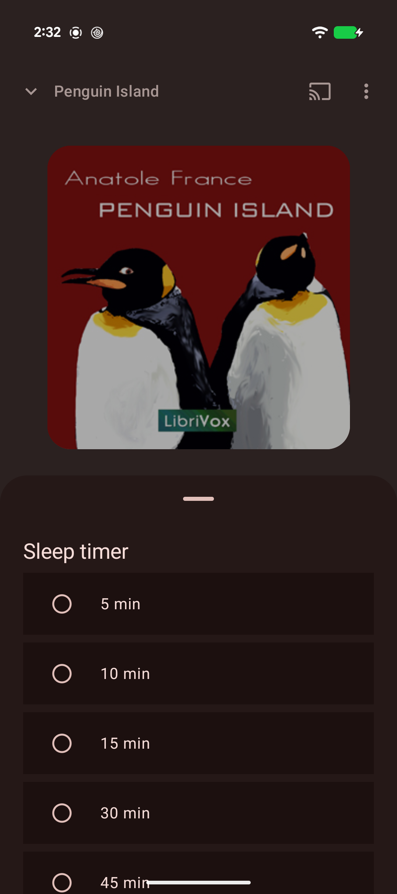
LibriVox Mobile is an independent app. The volunteer audiobook project is at LibriVox.org.
LibriVox Mobile is unofficial and is not affiliated with or endorsed by LibriVox. Recordings are made by LibriVox volunteers and are available from LibriVox.org.